All Recipe Diet
Starter Recipe Package
14 high-protein, whole-food recipes with detailed portions, step-by-step directions, complete nutrition info, and meal prep guidance for beginners.
Inside this package
- Garlic Butter Chicken Skillet
- Lemon Herb Salmon Plate
- Turkey Taco Lettuce Cups
- Greek Yogurt Berry Bowl
- Chickpea Power Salad
- Chicken Fajita Cauliflower Rice Bowl
- Apple Almond Protein Plate
- Honey Garlic Shrimp Sheet Pan
- Beef and Broccoli Stir-Fry
- Cajun Cod with Green Beans
- Buffalo Chicken Stuffed Peppers
- Pesto Zoodle Turkey Pasta
- Mediterranean Chicken Power Bowl
- Clean Breakfast Scramble
1. Garlic Butter Chicken Skillet
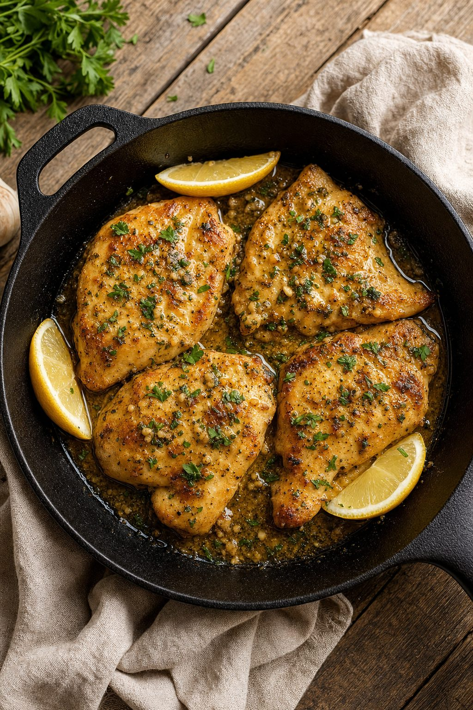
- 490 cal
- Prep: 5 min
- Cook: 15 min
- Serves 2
Ingredients
- 2 chicken breasts (6–7 oz each), pounded to ½-inch thickness
- 3 tbsp butter, divided
- 4 cloves garlic, minced
- 1 tsp paprika
- ½ tsp dried thyme
- 1 tbsp honey or maple syrup
- 2 tbsp fresh parsley, chopped
- ½ tsp sea salt
- ¼ tsp black pepper
- 1 tbsp olive oil
Instructions
- Pat chicken dry with paper towels. Season both sides with paprika, thyme, salt, and pepper.
- Heat 1 tbsp olive oil in a large skillet over medium-high heat.
- Place chicken in skillet and sear 4–5 minutes per side until golden and cooked through (internal temp 165°F). Remove to a plate.
- Reduce heat to medium. Add 3 tbsp butter and minced garlic; cook 30 seconds until fragrant.
- Stir in honey. Return chicken to skillet and spoon sauce over top. Cook 1 minute.
- Transfer to serving plate and garnish with fresh parsley.
Meal Prep Notes
Cook chicken and store in airtight container for 4 days. Reheat gently in microwave or skillet. Sauce is best made fresh but can be prepped the night before.
2. Lemon Herb Salmon Plate
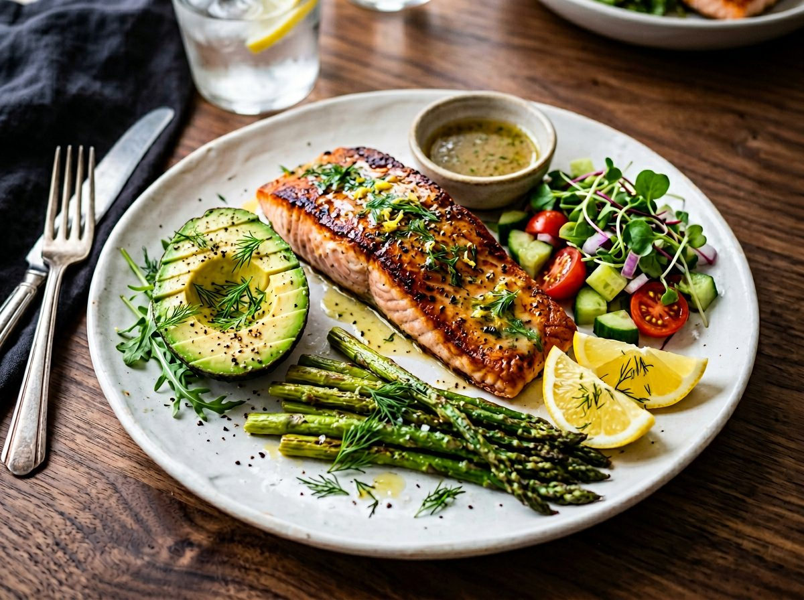
- 520 cal
- Prep: 5 min
- Cook: 12 min
- Serves 2
Ingredients
- 2 salmon fillets (5–6 oz each)
- 4 cups mixed greens (arugula, spinach, or mesclun)
- 1 cup roasted asparagus (12 spears), trimmed
- 1 lemon (half juiced for dressing, half for wedges)
- 2 tbsp extra-virgin olive oil, divided
- 1 tsp fresh dill (or ½ tsp dried)
- ½ tsp sea salt
- ¼ tsp black pepper
- ½ tsp smoked paprika
Instructions
- Pat salmon dry. Season with salt, pepper, dill, and paprika on both sides.
- Heat 1 tbsp olive oil in a skillet over medium-high. Place salmon skin-side down and sear 4–5 minutes until skin is crispy.
- Flip and cook 2–3 minutes until flesh flakes easily with a fork (internal temp 145°F).
- Toss greens with 1 tbsp olive oil, lemon juice, and a pinch of salt.
- Plate greens, top with salmon, add roasted asparagus, and serve with lemon wedge.
Meal Prep Notes
Roast asparagus in bulk on Sunday (toss 1 lb with 1 tbsp oil, salt, pepper; roast at 400°F for 15 min). Store separately for 5 days. Salmon best eaten fresh.
3. Turkey Taco Lettuce Cups
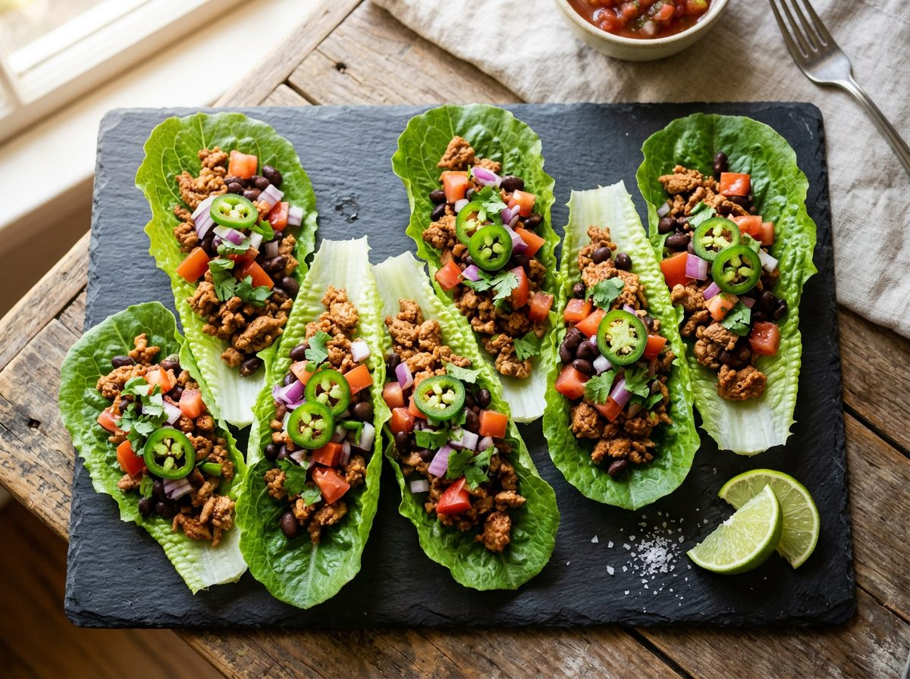
- 380 cal
- Prep: 10 min
- Cook: 12 min
- Serves 2
Ingredients
- 1 lb lean ground turkey (93/7)
- 2 tbsp gluten-free or regular taco seasoning
- ¼ cup water
- 1 large head romaine lettuce (8–10 leaves per serving)
- 1 cup diced tomato (1 large tomato)
- 1 avocado, sliced
- 1 lime, cut into wedges
- ¼ cup fresh cilantro, chopped
- ½ cup salsa (optional)
- 1 tbsp olive oil
Instructions
- Heat olive oil in a large skillet over medium-high heat.
- Add ground turkey, breaking it into small pieces as it cooks. Cook 6–7 minutes until browned and no pink remains.
- Sprinkle taco seasoning over turkey, add water, and stir well. Simmer 2–3 minutes until liquid thickens.
- Carefully separate and stack lettuce leaves on a plate.
- Spoon seasoned turkey into each lettuce cup. Top with tomato, avocado, cilantro, and a squeeze of lime.
Meal Prep Notes
Cook turkey mixture and store in container for 4 days. Assemble lettuce cups fresh to prevent sogginess. Slice avocado just before serving to prevent browning.
4. Greek Yogurt Berry Bowl
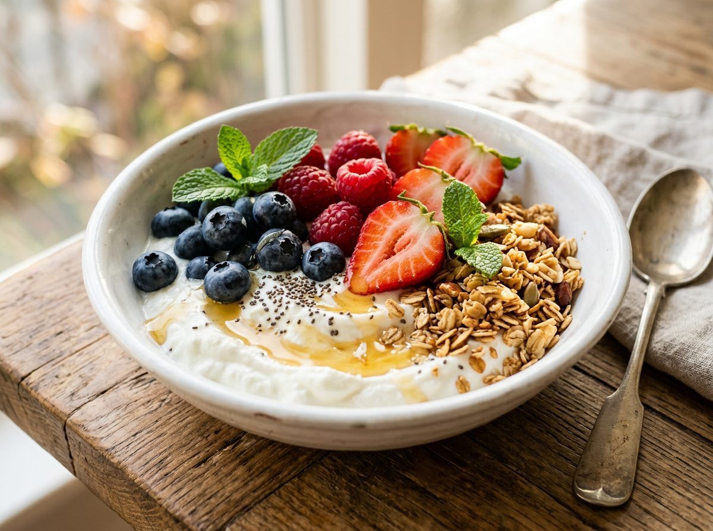
- 320 cal
- Prep: 5 min
- Cook: 0 min
- Serves 1
Ingredients
- 1 cup plain Greek yogurt (2% or full-fat, unsweetened)
- ½ cup mixed berries (blueberries, strawberries, or raspberries)
- ¼ cup raw almonds, sliced
- 1 tbsp raw chia seeds
- 1 tsp raw honey (or to taste)
- ¼ tsp ground cinnamon
- Pinch of sea salt
Instructions
- Spoon 1 cup yogurt into a bowl.
- Top with fresh berries, almonds, and chia seeds.
- Drizzle with honey.
- Sprinkle cinnamon and a pinch of salt over top.
- Serve chilled and enjoy immediately.
Meal Prep Notes
Prep berries in advance (store in containers). Keep yogurt and toppings separate until eating to maintain texture. Perfect quick breakfast or snack.
5. Chickpea Power Salad
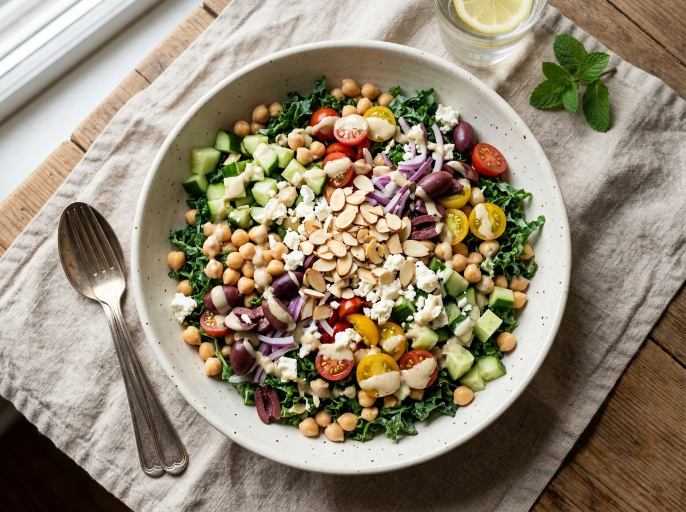
- 420 cal
- Prep: 15 min
- Cook: 0 min
- Serves 2
Ingredients
- 1 can (15 oz) chickpeas, rinsed and drained (about 1.5 cups)
- 1 English cucumber, diced (about 2 cups)
- 1 red bell pepper, diced (about 1 cup)
- ½ red onion, finely diced (about ½ cup)
- ½ cup crumbled feta cheese
- ¼ cup fresh parsley, chopped
- 3 tbsp extra-virgin olive oil
- 2 tbsp fresh lemon juice
- 1 tsp Dijon mustard
- ½ tsp sea salt
- ¼ tsp black pepper
Instructions
- In a small bowl, whisk together olive oil, lemon juice, Dijon mustard, salt, and pepper to make dressing.
- In a large bowl, combine chickpeas, cucumber, bell pepper, red onion, feta, and parsley.
- Pour dressing over salad and gently toss until everything is coated.
- Chill in refrigerator for at least 30 minutes before serving (flavors improve as it sits).
Meal Prep Notes
Stores beautifully for 4 days in the fridge. Make a big batch on Sunday. Can add grilled chicken (6 oz per serving) for extra protein at dinner.
6. Chicken Fajita Cauliflower Rice Bowl
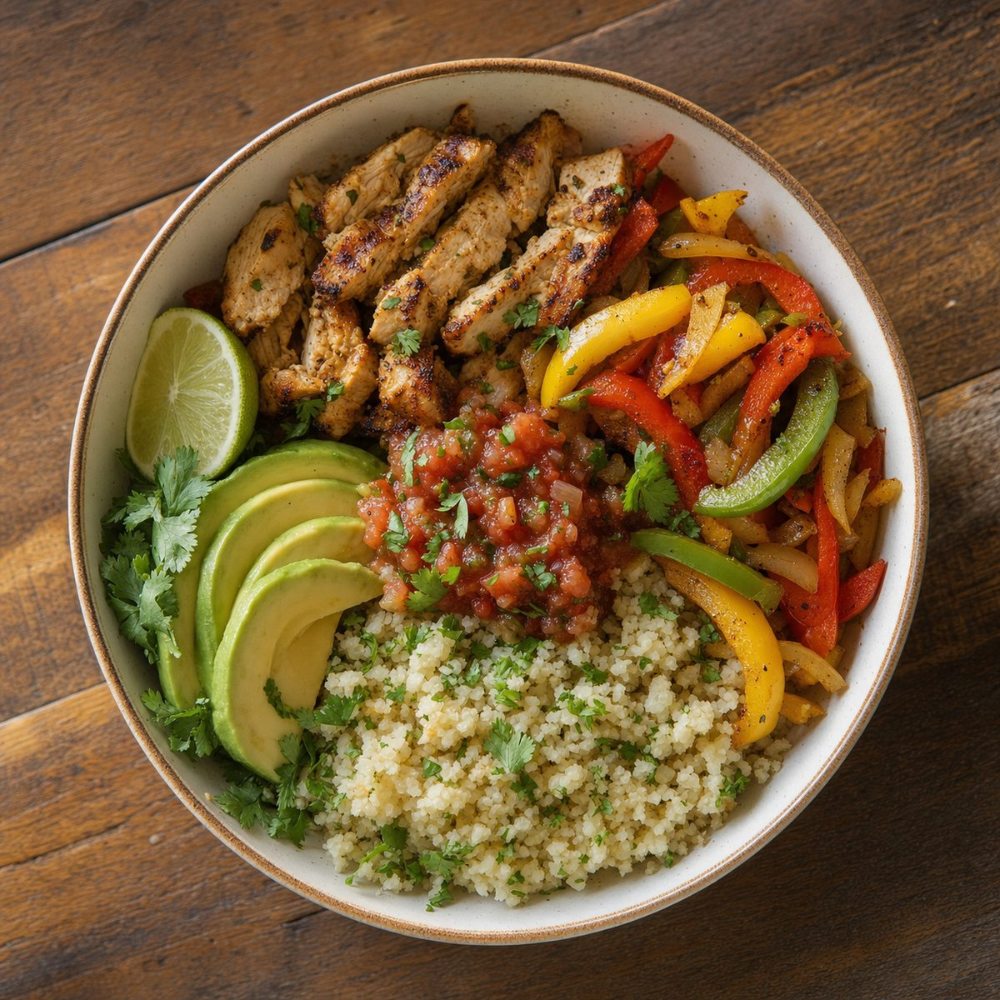
- 480 cal
- Prep: 10 min
- Cook: 18 min
- Serves 2
Ingredients
- 2 chicken breasts (6–7 oz each), sliced into thin strips
- 1 red bell pepper, sliced into strips (about 1 cup)
- 1 green bell pepper, sliced into strips (about 1 cup)
- 1 yellow onion, sliced into strips (about 1 cup)
- 3 cups cauliflower rice (fresh or frozen)
- 2 tbsp gluten-free or regular fajita seasoning
- 2 tbsp avocado oil or olive oil, divided
- 1 lime, juiced
- ¼ cup fresh cilantro, chopped
- ½ tsp sea salt (plus more to taste)
Instructions
- Toss chicken strips with 1 tbsp fajita seasoning and 1 tbsp oil in a bowl.
- Heat a large skillet or wok over medium-high heat. Cook chicken 5–6 minutes, stirring occasionally, until cooked through. Remove to a plate.
- Add remaining 1 tbsp oil to skillet. Sauté peppers and onion 4–5 minutes until tender-crisp.
- Return chicken to skillet, add remaining fajita seasoning, and toss to combine. Cook 1 minute.
- In a separate microwave-safe bowl or skillet, warm cauliflower rice 2–3 minutes until heated through.
- Divide cauliflower rice between two bowls, top with fajita mixture, squeeze lime over, and garnish with cilantro.
Meal Prep Notes
Slice peppers and onions Sunday for quick weeknight prep. Store separately from chicken. Assemble fresh or reheat gently in microwave.
7. Apple Almond Protein Plate

- 340 cal
- Prep: 5 min
- Cook: 0 min
- Serves 1
Ingredients
- 1 medium apple (Gala or Honeycrisp), sliced into 8 thin wedges
- 2 tbsp natural almond butter (no added sugar or oil)
- ¼ cup raw almonds (about 23 almonds)
- 2 large hard-boiled eggs, halved, OR ¾ cup plain cottage cheese
- ¼ tsp ground cinnamon
- Pinch of sea salt
Instructions
- Slice apple into thin wedges and arrange on a plate.
- Spoon almond butter into a small bowl for dipping.
- Add almonds and your protein choice (eggs or cottage cheese) to the plate.
- Sprinkle cinnamon over apple slices and a tiny pinch of salt over almonds.
- Enjoy as a snack or light lunch. Dip apple in almond butter as you eat.
Meal Prep Notes
Hard-boil eggs in bulk (boil 1 dozen for 12 min, cool in ice water, store for 5 days). Prep this "no-cook" meal in 2 minutes. Perfect afternoon snack.
8. Honey Garlic Shrimp Sheet Pan
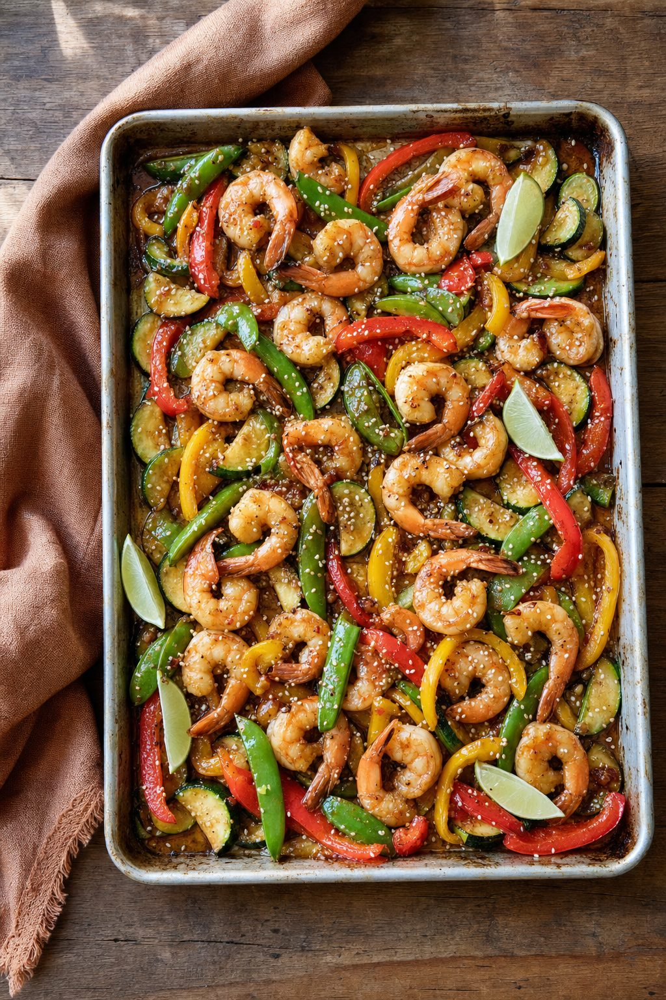
- 420 cal
- Prep: 10 min
- Cook: 12 min
- Serves 2
Ingredients
- 1 lb large shrimp (about 16–20 count), peeled and deveined
- 1 large head broccoli, cut into florets (about 4 cups)
- 3 cloves garlic, minced
- 3 tbsp tamari or low-sodium soy sauce
- 2 tbsp raw honey
- 1 tbsp avocado or sesame oil
- 1 tsp fresh ginger, grated
- ½ tsp sea salt
- ¼ tsp red pepper flakes (optional)
- 1 tsp sesame seeds (optional garnish)
Instructions
- Preheat oven to 425°F. Line a sheet pan with parchment paper.
- In a small bowl, whisk together tamari, honey, garlic, ginger, oil, salt, and red pepper flakes.
- Arrange shrimp and broccoli florets on the sheet pan, spacing them evenly.
- Pour about two-thirds of the sauce over the shrimp and broccoli; toss gently to coat.
- Roast for 8–10 minutes until shrimp are pink and opaque, and broccoli is tender.
- Drizzle remaining sauce over top, sprinkle with sesame seeds if desired, and serve immediately.
Meal Prep Notes
Prepare sauce and cut broccoli the night before. Peeled shrimp store for 2 days raw. Best eaten fresh from the oven, but can reheat gently.
9. Beef and Broccoli Stir-Fry
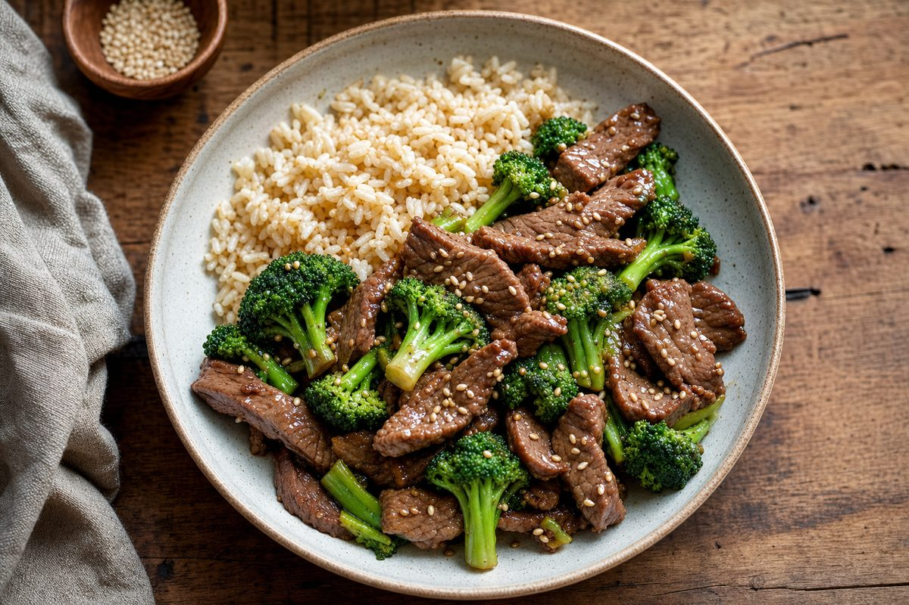
- 510 cal
- Prep: 15 min
- Cook: 15 min
- Serves 2
Ingredients
- 12 oz flank or sirloin steak, thinly sliced against the grain
- 1 large head broccoli, cut into small florets (about 4 cups)
- 3 tbsp tamari or low-sodium soy sauce
- 1 tbsp rice vinegar
- 1 tbsp raw honey or maple syrup
- 1 tsp cornstarch (or arrowroot powder)
- 2 cloves garlic, minced
- 1 tsp fresh ginger, grated
- 2 tbsp avocado or peanut oil, divided
- ½ tsp sea salt
- ¼ tsp black pepper
- 1 cup cooked brown rice or white rice per serving (½ cup cooked)
Instructions
- In a small bowl, whisk together tamari, vinegar, honey, cornstarch, garlic, and ginger to make sauce.
- Pat beef dry and season lightly with salt and pepper.
- Heat 1 tbsp oil in a wok or large skillet over high heat until shimmering.
- Working in batches if needed, cook beef 2 minutes per side until just browned. Remove to a plate.
- Add remaining 1 tbsp oil to the wok. Add broccoli florets and ¼ cup water; stir-fry 3–4 minutes until tender-crisp.
- Return beef to wok, pour sauce over everything, and toss constantly for 1–2 minutes until sauce thickens and coats beef and broccoli.
- Serve over cooked rice.
Meal Prep Notes
Slice beef and chop broccoli ahead of time. Store separately in containers. Cook rice in bulk on Sunday. Stir-fry is best made fresh but can be reheated gently.
10. Cajun Cod with Green Beans
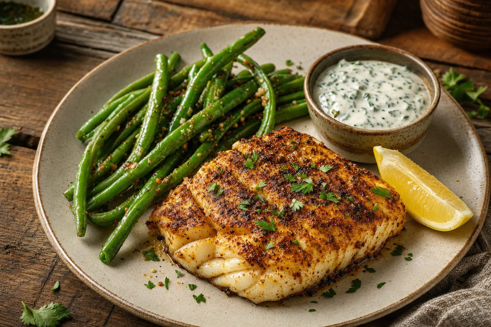
- 360 cal
- Prep: 5 min
- Cook: 15 min
- Serves 2
Ingredients
- 2 cod fillets (5–6 oz each)
- 12 oz fresh green beans, trimmed
- 1 tbsp gluten-free Cajun seasoning (check label)
- 2 tbsp avocado or olive oil, divided
- 3 cloves garlic, minced
- ½ tsp sea salt
- ¼ tsp black pepper
- 1 lemon, cut into wedges
Instructions
- Pat cod fillets dry with paper towels. Season both sides evenly with Cajun seasoning.
- Heat 1 tbsp oil in a skillet over medium-high heat.
- Place seasoned cod in the skillet and sear 3–4 minutes per side until flaky and opaque (internal temp 145°F). Remove to a plate.
- In a separate pan, heat remaining 1 tbsp oil over medium heat. Add garlic and sauté 30 seconds until fragrant.
- Add green beans, salt, and pepper. Sauté 5–6 minutes, stirring occasionally, until beans are tender-crisp.
- Plate cod with green beans on the side. Serve with lemon wedges.
Meal Prep Notes
Trim green beans on Sunday and store in containers. Cod is best cooked fresh but can be stored 2 days raw. Tilapia or haddock work as 1:1 substitutes.
11. Buffalo Chicken Stuffed Peppers
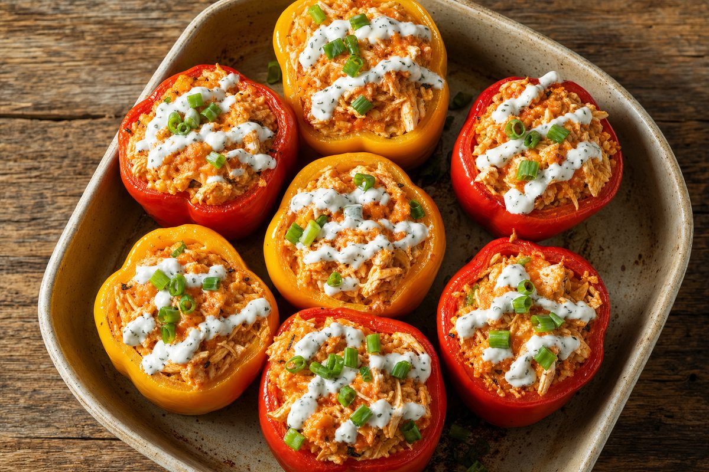
- 480 cal
- Prep: 15 min
- Cook: 25 min
- Serves 2 (4 peppers total)
Ingredients
- 4 large bell peppers (red, yellow, or orange), tops cut off and seeds removed
- 1 lb cooked shredded chicken (about 3 cups) or rotisserie chicken
- ⅓ cup gluten-free buffalo sauce (Frank's RedHot original is GF)
- ½ cup cooked brown rice or cauliflower rice
- ½ cup shredded sharp cheddar cheese
- 2 tbsp plain Greek yogurt or ranch dressing (for drizzling)
- 2 tbsp sliced green onion, for garnish
- ½ tsp sea salt
- ¼ tsp black pepper
Instructions
- Preheat oven to 400°F. Lightly oil a 9x13 baking dish and place peppers upright inside.
- In a medium bowl, combine shredded chicken, buffalo sauce, rice, salt, and pepper. Mix well.
- Divide filling evenly among the 4 peppers, mounding slightly.
- Top each pepper with 2 tbsp shredded cheddar cheese.
- Bake for 22–25 minutes until peppers are softened and cheese is melted.
- Remove from oven. Drizzle lightly with Greek yogurt or ranch, garnish with green onion, and serve hot.
Meal Prep Notes
Stuff peppers the night before and bake fresh for dinner. Or make ahead and reheat at 350°F for 12–15 min. Store for up to 3 days.
12. Pesto Zoodle Turkey Pasta
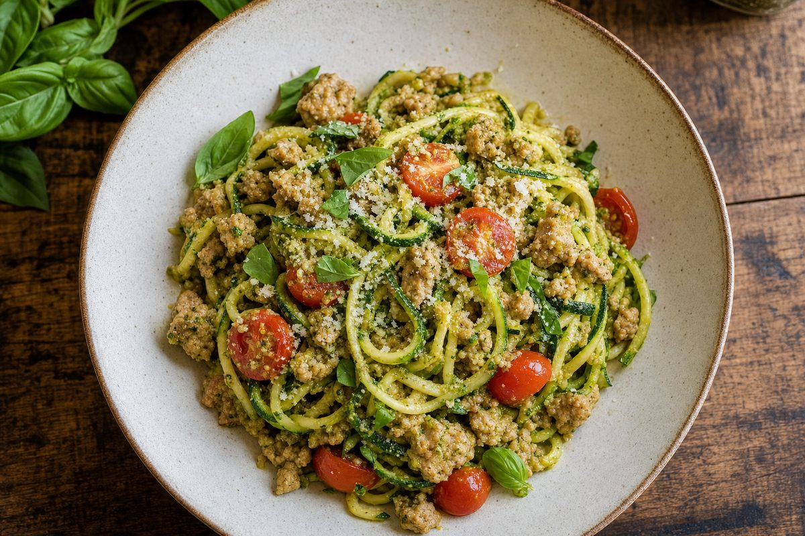
- 420 cal
- Prep: 10 min
- Cook: 12 min
- Serves 2
Ingredients
- 1 lb ground turkey (93/7), or turkey breast, finely diced
- 4 medium zucchini, spiralized into noodles
- ⅓ cup fresh or store-bought pesto (verify gluten-free)
- 1 cup cherry tomatoes, halved
- 2 tbsp grated Parmesan cheese
- 1 tbsp extra-virgin olive oil
- ½ tsp sea salt
- ¼ tsp black pepper
- ⅛ tsp red pepper flakes (optional)
- Fresh basil leaves, for garnish (optional)
Instructions
- Heat olive oil in a large skillet over medium-high heat.
- Add ground turkey, breaking it into small pieces as it cooks. Cook 6–7 minutes until browned and no pink remains. Season with salt and pepper.
- Add cherry tomato halves to the pan and cook 2 minutes until they just begin to soften and release their juices.
- Add spiralized zucchini noodles and pesto to the skillet. Toss gently for 2–3 minutes until zoodles are just tender (do not overcook or they will become mushy).
- Remove from heat. Top with Parmesan, red pepper flakes if desired, and fresh basil.
- Divide between two plates and serve immediately.
Meal Prep Notes
Spiralize zucchini up to 1 day ahead; store in a colander lined with paper towels to drain excess liquid. Cook turkey component ahead and reheat gently. Assemble fresh with zoodles to prevent sogginess.
13. Mediterranean Chicken Power Bowl

- 540 cal
- Prep: 10 min
- Cook: 25 min
- Serves 2
Ingredients
- 2 chicken breasts (6–7 oz each), grilled or pan-seared and sliced
- 1 cup cooked brown rice
- 1 cup diced cucumber
- 1 cup cherry tomatoes, halved
- ½ cup Kalamata olives, pitted and halved
- ½ cup crumbled feta cheese
- ¼ cup fresh parsley, chopped
- 2 tbsp extra-virgin olive oil
- 2 tbsp fresh lemon juice
- 1 tsp dried oregano
- ½ tsp sea salt
- ¼ tsp black pepper
Instructions
- Season chicken breasts with ½ tsp salt, ¼ tsp pepper, and ½ tsp oregano on both sides.
- Heat 1 tbsp oil in a skillet over medium-high. Sear chicken 6–7 minutes per side until cooked through (internal temp 165°F). Rest 5 minutes, then slice.
- Divide cooked rice between two bowls. Top each with sliced chicken.
- Arrange cucumber, cherry tomatoes, olives, and feta around the chicken.
- In a small bowl, whisk remaining 1 tbsp olive oil, lemon juice, remaining oregano, salt, and pepper.
- Drizzle dressing over bowls, sprinkle with fresh parsley, and serve immediately.
Meal Prep Notes
Cook rice and chicken ahead on Sunday. Assemble bowls fresh to preserve texture, or store components separately for up to 3 days and assemble on the day you eat.
14. Clean Breakfast Scramble

- 380 cal
- Prep: 5 min
- Cook: 10 min
- Serves 2
Ingredients
- 4 large eggs
- ½ lb lean turkey sausage (ground or links, crumbled)
- 2 cups fresh spinach, roughly chopped
- 1 red bell pepper, diced (about ¾ cup)
- ¼ cup diced onion
- 1 tbsp butter or olive oil
- ½ tsp sea salt
- ¼ tsp black pepper
- ¼ tsp garlic powder
- Fresh chives or parsley, chopped (optional garnish)
Instructions
- In a bowl, whisk together eggs, salt, pepper, and garlic powder. Set aside.
- Heat ½ tbsp butter in a large nonstick skillet over medium-high heat.
- Add crumbled turkey sausage and cook 4–5 minutes, breaking it apart as it cooks, until browned and no pink remains. Remove to a plate.
- Add remaining ½ tbsp butter to the same skillet. Add diced bell pepper and onion; sauté 2–3 minutes until softened.
- Add spinach and cook 1 minute until just wilted.
- Return sausage to the skillet. Pour whisked eggs over everything and gently scramble, stirring occasionally, for 2–3 minutes until eggs are cooked through but still soft.
- Transfer to serving plates, garnish with fresh chives if desired, and serve hot.
Meal Prep Notes
Dice vegetables Sunday evening. Cook turkey sausage in bulk for grab-and-go breakfasts. Scramble is best fresh but can be reheated gently in the microwave (30–40 sec).